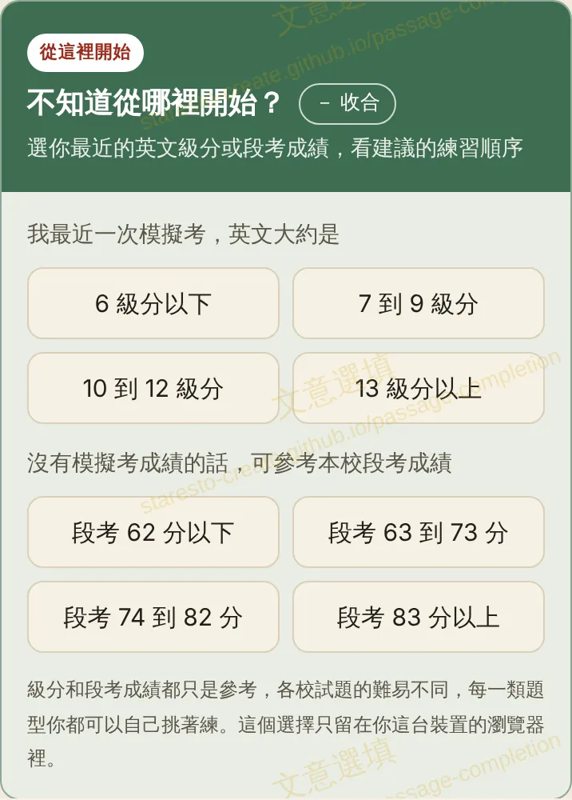
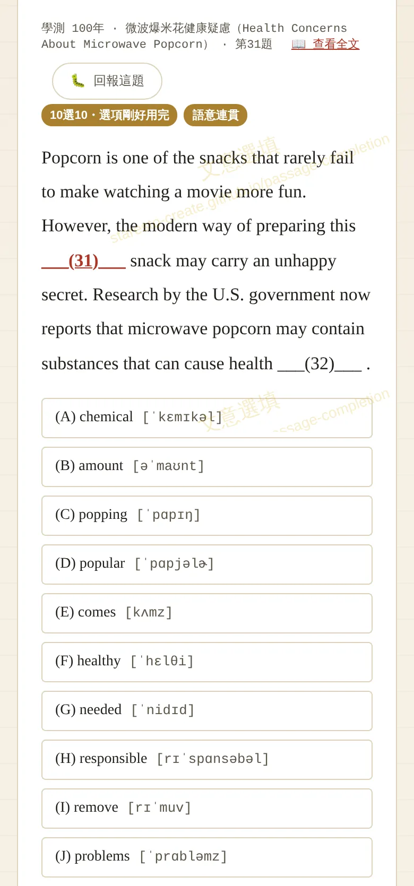
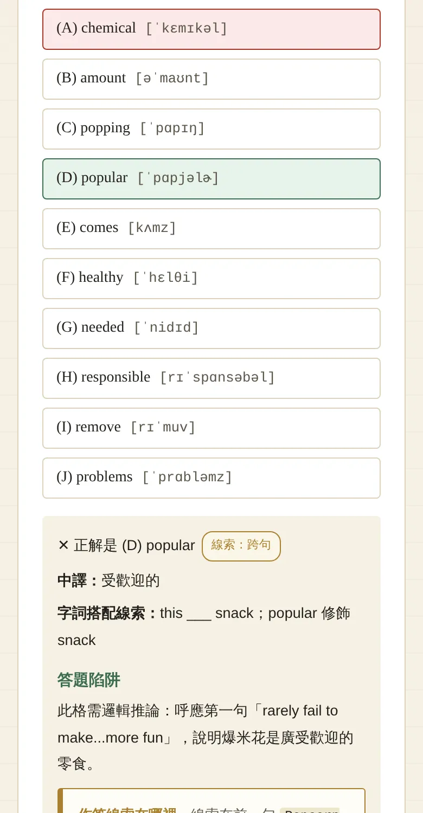
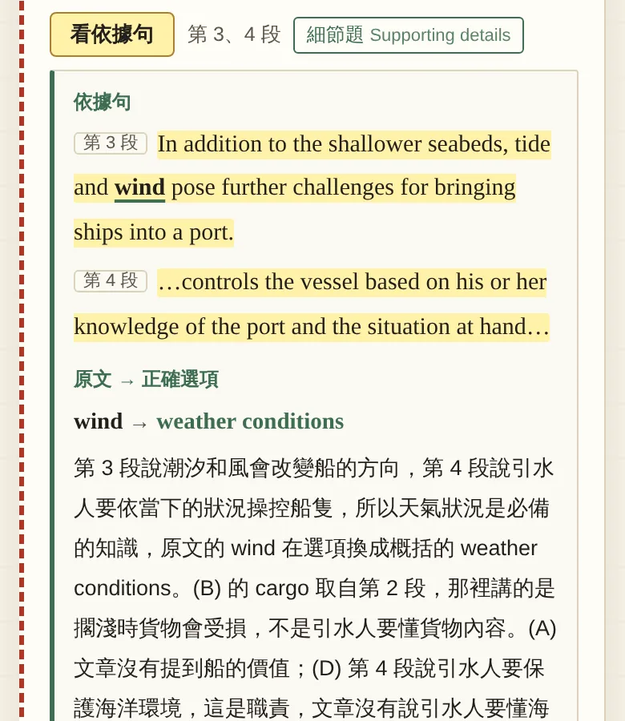
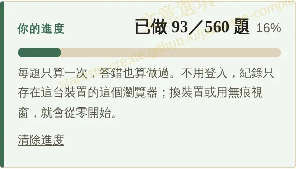
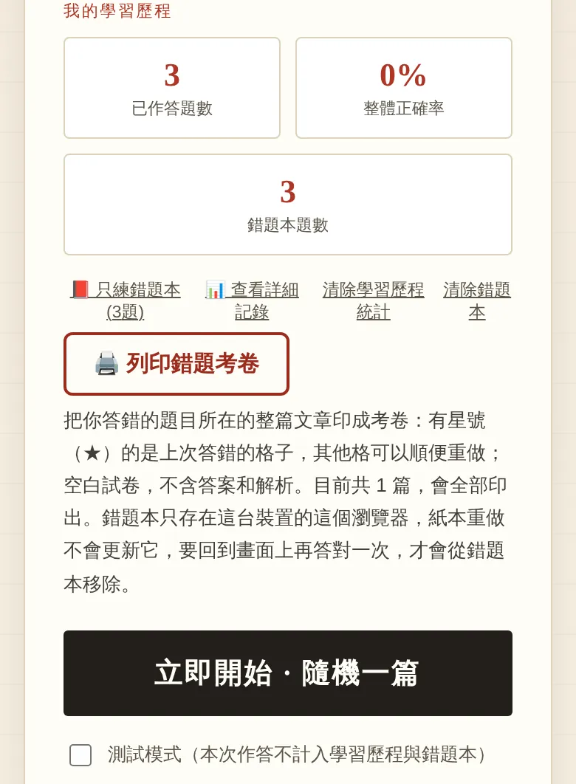
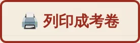
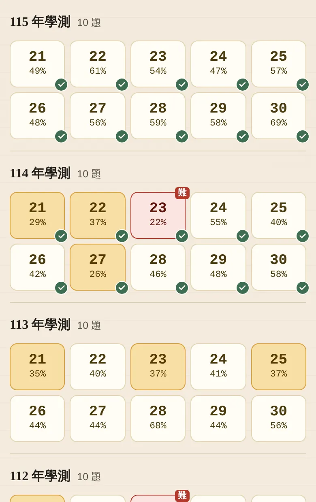

下面的畫面都是手機版。電腦版按鈕位置略有不同，功能一樣。下面的畫面以文意選填為例，其他題庫的按鈕名稱或位置可能略有不同；測試模式、列印錯題考卷和題目地圖，只有部分題庫有。這個題庫不用註冊、不用登入，有幾個地方和一般的練習網站不一樣，先看一下最容易誤會的幾點。
在各題庫首頁的「從這裡開始」卡片，選你最近一次模擬考的英文級分或本校段考成績，就會看到建議的練習順序。級分和段考成績都只是參考，每一類題型你都可以自己挑著練。

點下選項就算作答，會立刻批改，不能收回，所以想好再點。

答完會出現正解、中譯和解析。「線索：句內／跨句」標籤和「作答線索在哪裡」都要答完才會出現，作答前看不到。

閱讀測驗交卷後，按每一題下方的「看依據句」，文章裡的依據句會用黃底標出；要讀完整篇才能判斷的題目，會寫「依據句：全文」。粗體加綠色底線的字詞，閱讀測驗標的是正確選項換了說法的原文字詞，混合題標的是最關鍵的字詞。混合題還可以按「在上方的文章裡看這一句」跳到原文位置。

每一題只算一次，答對答錯都算做過。整篇練習要按「送出批改」或「交卷」才計入，沒填的格子不算；中譯英要看完參考答案、自評對錯才算。改編練習不計入進度。至於「學習歷程」裡的已作答題數，同一題每答一次就加一，和進度是兩回事。

答錯的題目會進錯題本，可以按「只練錯題本」（單字題庫叫「複習錯題本」）重做，在畫面上答對一次就會移出錯題本。整篇型的題庫還可以按「列印錯題考卷」，把錯題所在的整篇文章印成考卷，上次答錯的格子標星號（★）。勾選「測試模式」時，這次作答不計入進度、學習歷程與錯題本，答對也不會把題目移出錯題本。

進到題目畫面後，按最上方的「列印成考卷」，印出來的是空白考卷，沒有答案與解析。在 Threads、LINE 裡打開時不能列印，要改用 Safari 或 Chrome。紙本上的作答不會更新進度，要回到畫面上再答一次，才會記錄。

有題目地圖的題庫，會把全部題目排成一張圖：一格是一題，格子裡有題號和大考中心公布的答對率，顏色越紅越難，沒有官方答對率的標「—」；答過的格子會加 ✓，點格子就跳到那一題。
